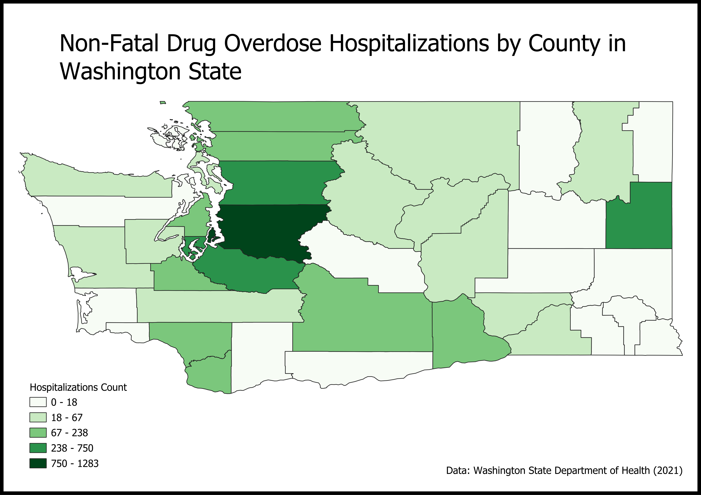

Non-Fatal Drug Overdoses |
This map shows the spatial influences of non-fatal drug overdose hospitalizations across counties in Washington State. It offers insight into the broader impact of drug overdoses on the healthcare system and focuses on areas where incidents place a strain on medical resources. Each county is color coded based on the count of non-fatal drug overdose hospitalizations in 2021. Darker shades of green indicate for higher hospitalization count, meaning these counties are experiencing higher frequency of individuals requiring hospitalization due to drug overdoses. The legend ranges from 0 to 1283, providing a visual of the vast number of non-fatal drug overdose hospitalizations across different counties. Taking a closer look at the visual, the areas with the highest concentrations of hospitalizations are King, Pierce and Snohomish County, suggesting that these areas have the biggest hospitalization crisis. Factors that can potentially cause these counties to have a high count of hospitalizations due to drug overdose is drug availability/accessibility, lack of access to treatment, substance use disorder, etc.